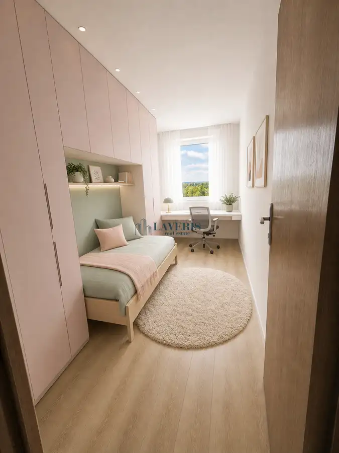
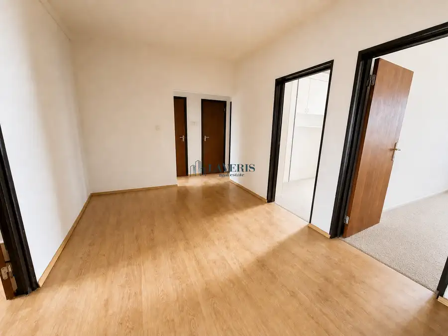
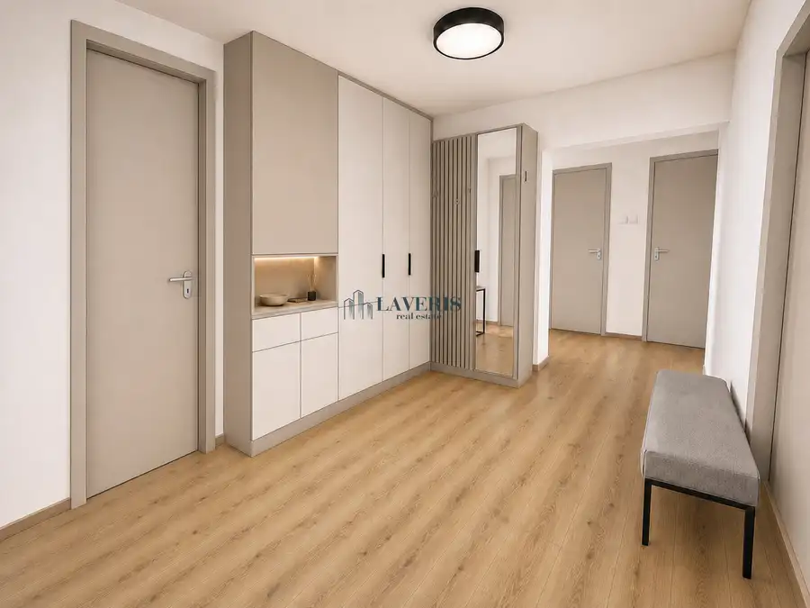
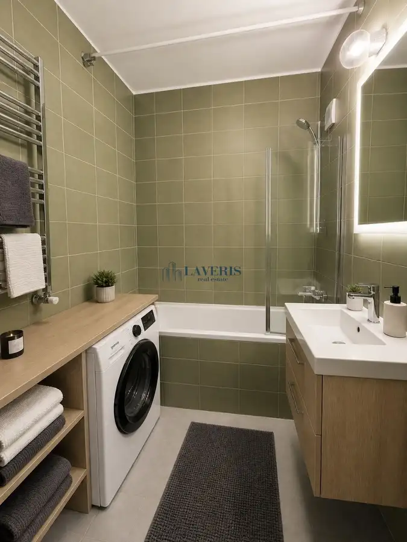
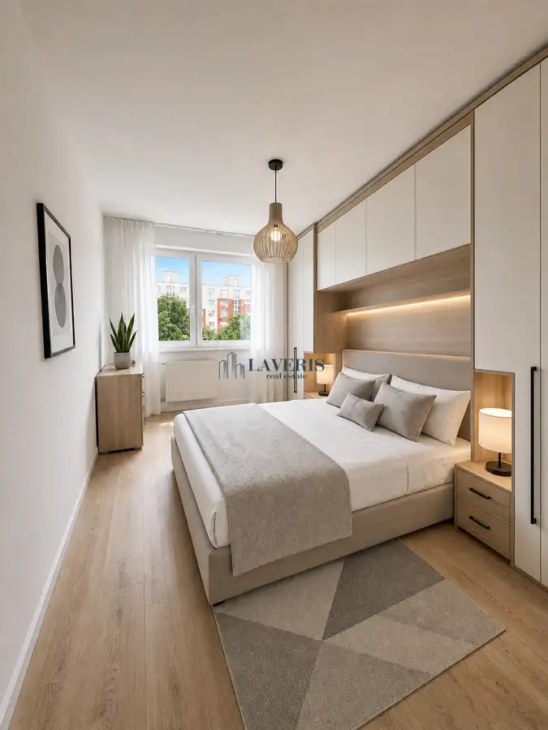

Priestranný 4-izbový byt vo vyhľadávanej lokalite na začiatku Petržalky
Petržalka, Bratislava





- Dispozícia4-izbový
- Plocha87 m²
- Poschodie7. z 9
- StavČiastočná rekonštrukcia
O nehnuteľnosti
Exkluzívne ponúkame na predaj priestranný byt v jednej z najvyhľadávanejších lokalít bratislavskej Petržalky.Tento priestranný a svetlý 4-izbový byt nachádzajúci sa na Pečnianskej ulici, predstavuje ideálnu príležitosť pre rodinu, ktorá hľadá moderné bývanie s možnosťou dotvorenia domova podľa vlastných predstáv. S celkovou úžitkovou plochou 87 m² ponúka nehnuteľnosť veľkorysý priestor, v ktorom dominuje prirodzené svetlo a logické členenie miestností.Interiér bytu prešiel čiastočnou rekonštrukciou, čo novému majiteľovi poskytuje vynikajúci východiskový bod. Kuchyňa, s východom na zasklenú loggiu, je ladená v elegantnom štýle s bielou linkou a kvalitnými spotrebičmi, pričom ponúka dostatok miesta pre rodinné stolovanie. Orientácia okien a vyššie podlažie zabezpečujú príjemné presvetlenie všetkých štyroch izieb, čo dodáva bytu vzdušnú a pozitívnu atmosféru.Spálne sú navrhnuté efektívne a miestnosti sú variabilné. Môžu slúžiť ako detské izby, pracovňa alebo hosťovská izba. Kúpeľňa v nadčasových zelených tónoch s klasickou vaňou dotvára praktickú stránku bytu. Pri rekonštrukcii bola oddelená kúpeľňa a samostatná toaleta. Vďaka skvelej dispozícii máte možnosť upraviť zvyšné detaily tak, aby presne odrážali váš osobný vkus a potreby.Lokalita Pečnianskej ulice je jedna z najvyhľadávanejších v rámci Petržalky vďaka priamej blízkosti centra mesta a vynikajúcej infraštruktúre. V pešej dostupnosti nájdete kompletnú občiansku vybavenosť – nákupné centrum Aupark, Sad Janka Kráľa na relax v prírode, školy, škôlky a zastávky MHD. Rýchle napojenie na obchvat a blízkosť hraníc s Rakúskom robia z tohto miesta strategický bod pre aktívny mestský život.Táto nehnuteľnosť je v ponuke na PREDAJ za cenu 289 900 €. Ak hľadáte priestranný rodinný byt, ktorý kombinuje pohodlie okamžitého bývania s potenciálom vlastnej tvorivosti, Pečnianska ulica je voľbou, ktorú musíte vidieť osobne.---HLAVNÉ BENEFITY NEHNUTEĽNOSTI:- Veľkorysá plocha: 87 m² úžitkovej plochy ponúka komfort pre celú rodinu.- Svetlá dispozícia: 4 plnohodnotné izby s veľkými oknami a príjemným výhľadom.- Vlastná realizácia: Možnosť dokončenia interiéru presne podľa vašich predstáv.- Strategická lokalita: Vynikajúca dostupnosť do centra Bratislavy aj na diaľničný obchvat.- Kompletná vybavenosť: Školy, škôlky, parky a obchody v tesnej blízkosti.- Atmosféra: Tiché prostredie obklopené zeleňou v rámci mestskej zástavby.V prípade záujmu o obhliadku alebo ďalšie informácie ma neváhajte kontaktovať na emailovej adrese: lorencova@laveris.sk
Parametre
- Cena vrátane energií
- Nie
- Druh
- 4 izbový byt
- Dátum zverejnenia
- 03. 09. 2026
- Energetický certifikát budovy
- nie je
- Orientácia
- Východná, Západná
- Podlažie
- 7
- Počet lodžií
- 1
- Počet nadzemných podlaží
- 9
- Počet spální
- 3
- Rok kolaudácie
- 1986
- Rok poslednej rekonštrukcie
- 2012
- Rok výstavby
- 1986
- Stav nehnuteľnosti
- Čiastočná rekonštrukcia
- Typ
- Predaj
- Typ konštrukcie
- Zmiešaná
- Umiestnenie
- Ďalšie nadzemné podlažie
- Vybavenie
- Výťah, Verejné parkovanie, Lodžia
- Úžitková plocha
- 87 m²